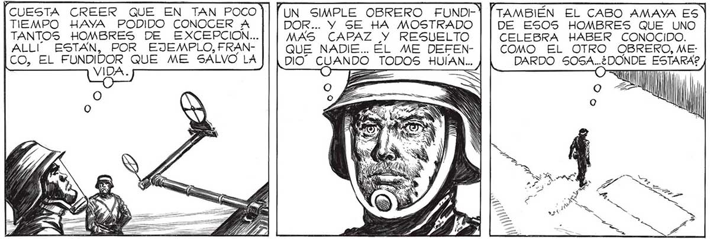
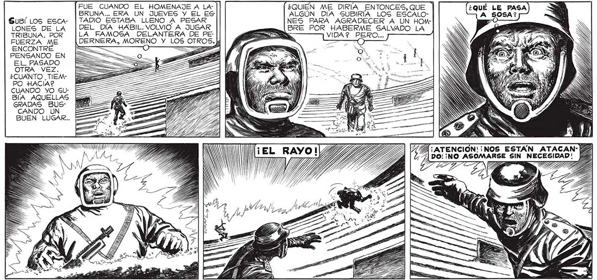

CUESTA CREER QUE EN TAN POCO TIEMPO HAYA PODIDO CONOCER A TANTOS HOMBRES DE EXCEPCION... ESTAN, POR EJEMPLO, FRANCO EL da QUE ME SALVO LA VIDA. ALLI Sus LOS ESCALONES DE LA TRIBUNA. POR FUERZA ME ENCONTRÉ PENSANDO EN EL PASADO OTRA VEZ. ¿CUANTO _TIEMPO HACIA? CUANDO YO GUBA AQUELLAS GRADAS BUSCANDO UN BUEN LUGAR... o FUE CUANDO EL HOMENAJE A LABRUNA... ERA UN JUEVES Y EL ES TADIO ESTABA LLENO A PESAR DEL DÍA HAXABIL. VOLVIO A JUGAR LA FAMOSA DELANTERA DE PE: lDERNERA, MORENO Y UN SIMPLE OBRERO FUNDIDOR... Y SE HA MOSTRADO MAS CAPAZ Y RESUELTO QUE NADIE... EL ME DEFENDIO E mias, TODOS HUIAN... "TAMBIÉN EL CABO AMAYA ES! ¡ALLA ESTA, HACIENDO DE CENTINELA!N¡NO HA DESCANSADO AÚN DEL COMBATE, Y YA ESTA PRESTANDO SERVICIO OTRA VEZ! VOY A DECIRLE DOS 7 PALABRAS... TAMBIÉN ÉL ME SALVO Y NI LAS 6 Dr. o % S a To s o S S DE ESOS HOMBRES QUE UNO CELEBRA HABER CONOCIDO. COMO EL OTRO OBRERO, MEDARDO ia y cl ESTARA? ' S PZA E A ¿QUIÉN ME DIRÍA ENTONCES, QUE ALGÚN DIA SUBIRÍIA LOS ESCALONES PARA AGRADECER A UN HOMBRE POR HABERME SALVADO LA : VIDA ? PERO. A¡ATENCION!: ¡NOS ESTÁN ATACAN: 4 ; Pr ¡NO ASOMARSE SIN NECESIDAD! y A A Y IG, dul

